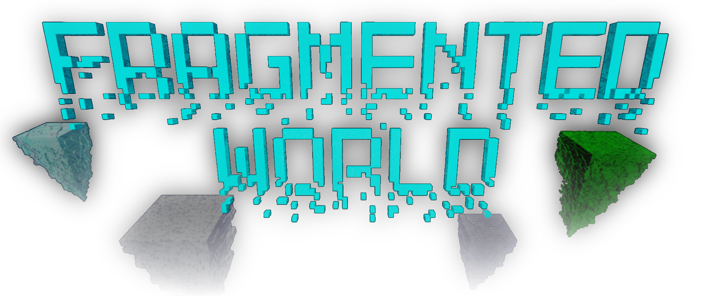
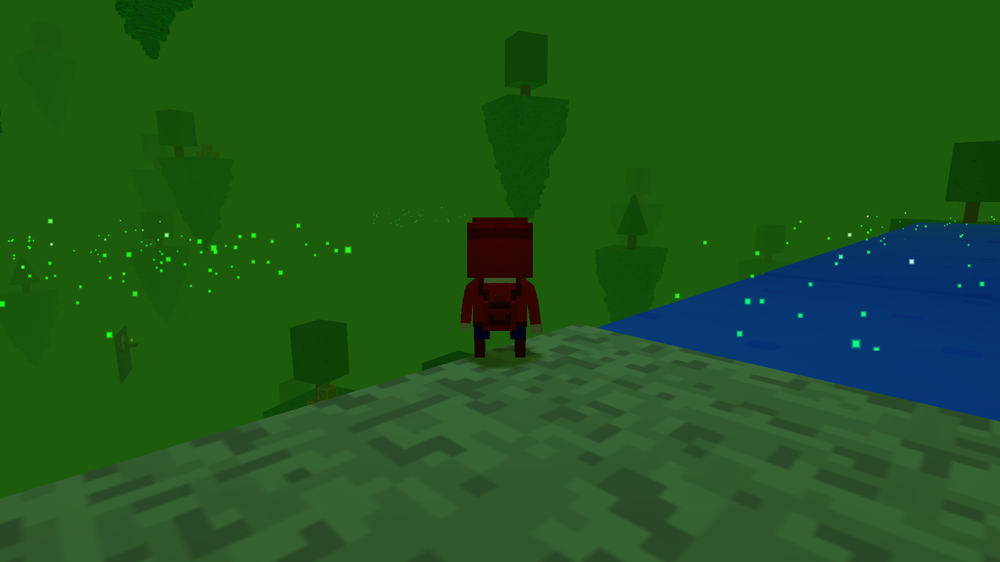

Fragmented World
Explore a world fractured by unknown forces, as you attempt to collect the lost fragments required for restoring what was once whole. Created using Unity3D as a University project, I was responsible for the game direction and scripting of graphical elements and game mechanics.

Frontier Survival
Reclaim lost satellites scattered across the planetary system while avoiding spaceships and UFOs looking to hunt you down. Written in MonoGame, I partook in the project as game designer and scripting of the initial prototype.